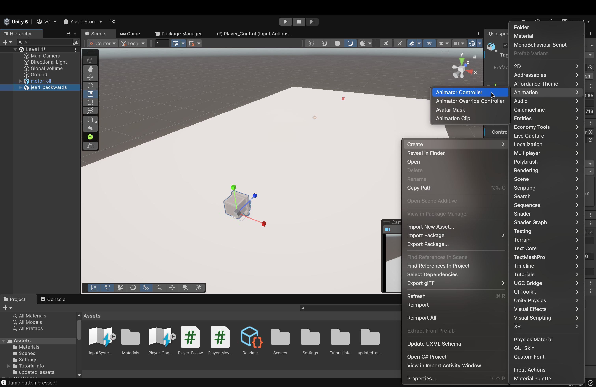
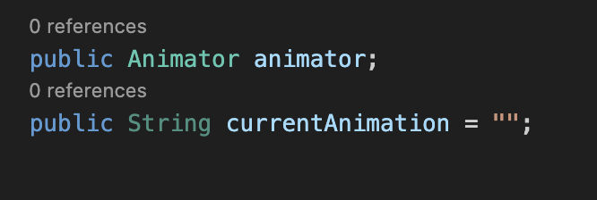

Let's set up some animations!
To start, let's set up an animator for our object!
- In our Assets view, right-click then hover over Create. In the next menu, hover over the Animation menu. Then, in the next menu, click on Animator Controller.
- Be sure to name it something like "Player_Animate"
- What is this and why do we need it?
- The Animator Controller is an asset in Unity that handles the logic of which animations will play for a particular object, what the transitions are, when the transitions occur, and so on.
- However, for this tutorial, we will NOT be using it in the traditional sense.
- Instead, we will transition between the animations using code.
- In my recent experience in learning Unity, this was much easier to understand (for me, at least).
- In addition, the Animator Controller gets significantly more complicated as more animations are added and configured.
- Instead, we will transition between the animations using code.
- Double click on the newly created Animator Controller below in your Assets. You will see the window (in the image above) open up.
- When gameplay is initiated, the first node, the first animation that we place (which will act as a node on a graph) will connect to the Start node.
- This animation will play first upon initiating gameplay.
- From here on out, even though we won't make explicit node connections, we will still place all of our animations here (starting with idle animation first).
- When gameplay is initiated, the first node, the first animation that we place (which will act as a node on a graph) will connect to the Start node.
- To access our animations, double-click on the updated_assets folder.
- Find the jearl_backwards asset and click the triangle icon to expand the "innards" of the asset
- This is what you should see when you expand the asset. Here, our animations are items that are marked with a teal triangle with lines on the left. These are our animations.
- Be sure to thank David Awkar for creating and providing the assets and the animations (🎉).
- Be sure to thank David Awkar for creating and providing the assets and the animations (🎉).
- Drag and drop the idle animation into the Animator Board.
- This is our first animation that will play.
- By convention, in any game, the idle animation is always placed first.
- By convention, in any game, the idle animation is always placed first.
- This is our first animation that will play.
- From here on out, place all the rest of the animations onto the board.
- For our case, the order doesn't matter (except for the idle animation going first)
- This is because we'll be using code to switch in between the animations. Therefore, placement order doesn't matter.
- Back in the Scene view, click on jearl_backwards and, in the Animator component, drag and drop our Animator Controller object into the Controller box
- Unity will have auto-created an Animator Controller when you placed the jearl_backwards asset into the Scene.
- Unity will have auto-created an Animator Controller when you placed the jearl_backwards asset into the Scene.
Now, let's add the code to switch between animations!

- In our Player_Movement script, let's add the following variables:
- public Animator animator;
- This is what will hold our Animator Controller that we made earlier. Any changes we make to our animations will be made to this variable.
- public String currentAnimation = "";
- When transitioning between our animations, we will simply use the name of the animation (as it is inside our Animator Controller).
- This variable will simply hold that name as a String.
- public Animator animator;
- Now, let's add the following function to our script, right below OnCollisionEnter
- What is this? What does it do?
- This function is what will actually initiate the transition between our animations.
- It takes in two parameters:
- animation
- This is the name of the animation to transition to.
- crossfade
- This is the length (in seconds) over which we will transition between two animations.
- animation
- Let's go over each line:
- if (currentAnimation != animation) {
- If the current animation is NOT the new animation which we wish to transition to.
- This if statement ensures that we skip the body of the function if animation ever equals currentAnimation.
- currentAnimation = animation
- If the transition is a valid transition, then we take the name of the current animation and set it to the name of the new animation.
- Essentially, that String variable keeps track of the animation that is currently playing.
- If the transition is a valid transition, then we take the name of the current animation and set it to the name of the new animation.
- animator.CrossFade(animation, crossfade)
- This is the line performing the transitions.
- Since our animator variable is of type Animator, we can call the built-in function CrossFade on that variable (which, remember, is going to hold our Animator Controller) to switch from one animation to another.
- The first parameter is the name of the animation to transition to.
- The second parameter is the fade length in seconds.
- if (currentAnimation != animation) {
- We will now call this function in a variety of situations.
- What is this? What does it do?
- Next, below our ChangeAnimation function, let's add this function.
- What does it do?
- This function will run every frame (alongside movePlayer) to constantly change the player object's animation during gameplay.
- Let's go through each line:
- if (currentAnimation == "jumping") { return; }
- If our current animation is the jumping animation, DON'T DO ANYTHING.
- We don't want to make animation transitions while we're airborne. Hence, we use this line to ensure that that doesn't happen.
- if (movement.x != 0 || movement.z != 0) { ChangeAnimation("walk_cycle"); }
- If we're moving, at all, in any direction, then change the animation to walk_cycle.
- Recall that our movement variable is a 3D vector whose only changing values are for the x-axis and z-axis (we don't move upwards, along the y-axis, with WASD).
- So, we check these two. See if one is non-zero, the other is non-zero, or both are non-zero. If any one of these conditions is true, we change the animation to the walking animation.
- else { ChangeAnimation("idle"); }
- If we aren't moving at all, change the animation to idle. Pretty-self explanatory.
- If we aren't moving at all, change the animation to idle. Pretty-self explanatory.
- if (currentAnimation == "jumping") { return; }
- What does it do?
- Copy the if-else statement from our CheckAnimation function (which checks for movement) and paste it in the OnCollisionEnter function, inside the if statement that checks for a collision with ground
- Why do we need this here?
- Without this check here, after jumping (and initiating the jump animation), we will be permanently stuck in the jump animation.
- Without this check here, after jumping (and initiating the jump animation), we will be permanently stuck in the jump animation.
- Why do we need this here?
- Lastly, add a function call for the CheckAnimation() function in the Update() function.
- We need this function to run every frame so that our animation changes dynamically and constantly.
- We need this function to run every frame so that our animation changes dynamically and constantly.
- Back in our editor, drag and drop the Animator Controller object we created into the blank space in the Animator component of jearl_backwards in our Script component.